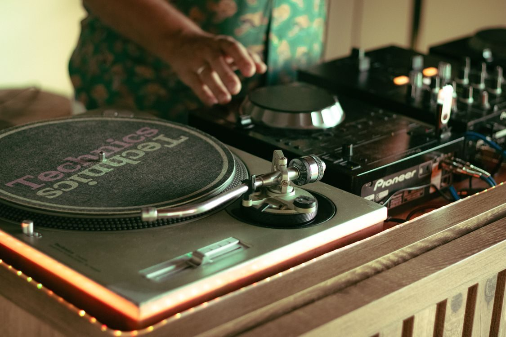

Bass Clef Presentations is a mobile DJ service for weddings and special events across the Alabama, Mississippi and Florida Gulf Coast. Ceremonies and receptions, personalized playlist planning, and a Glambooth photobooth add-on.

A DJ at the turntables. Stock photo.
Bass Clef brings the music to your venue: wedding DJ for ceremonies and receptions, with personalized playlist planning, a do-not-play list, and help sourcing the aisle song.
The Glambooth photobooth add-on and event lighting are also available, according to customer reviews. Reviews mention Gulf Shores beach receptions and proms, and describe a DJ who plans the night around the couple.